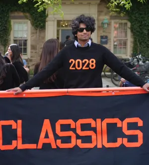
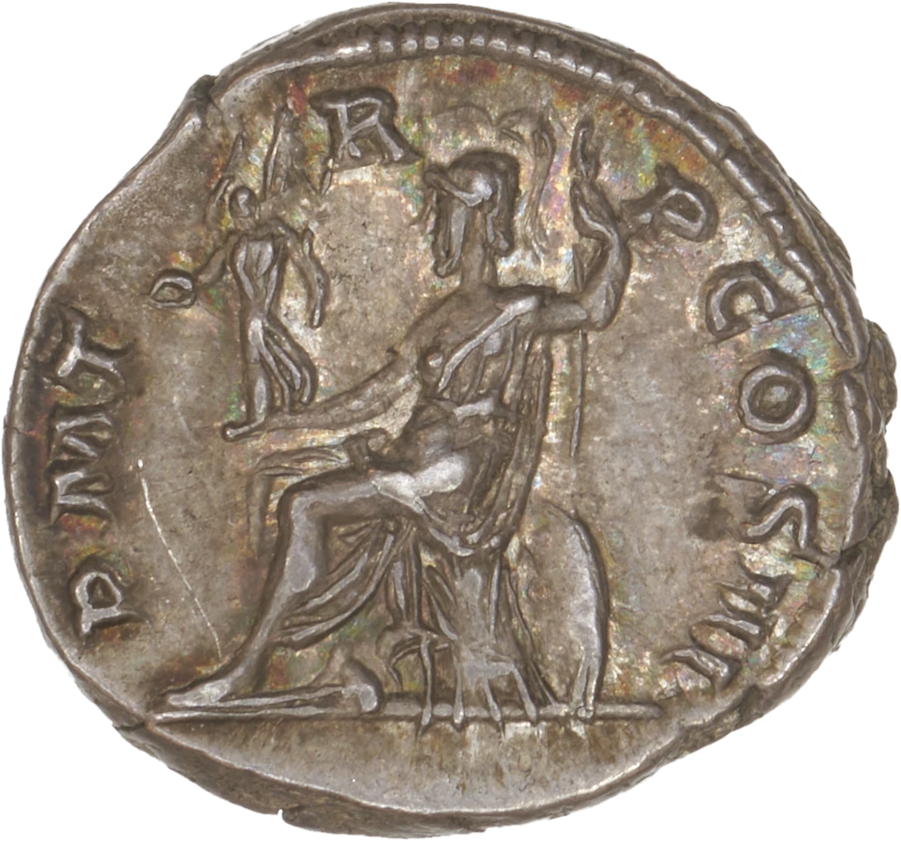

Hi! I'm Reza and I'm interested in ancient history, math, historical monetary policy, numismatics, and machine learning; currently an undergrad @ Princeton classics
contact me: linkedin or rezaramji@princeton.edu
Independent research project for Princeton University Library focusing on semi-automatic recognition of ancient coins (please contact me if you know how to design custom OCR systems, are interested in numismatics and ML, or have any ideas on machine learning in small datasets)
I started with Youklid [github], an attempt to find some new mappings of ideas in Euclid's Elements & test using AI on verification of mathematical steps in parallel.
Recently, extended this with lean using Murphy et alia's lean euclid to test translation autoformalization locally using Qwen2.5-Coder-7B-Instruct on an orin nano super (however, memorization forced me to use GPT-4o instead; Interestingly, while translation choice did not show a statistically significant difference, prompting choices were (id est, providing autoformalization exempla in the correct translation in the prompt). Probably this suggests mathematicians hoping to utilize autoformalization in their own writing, especially with small models, should 'lean' some of their work manually so compiling agents can adapt to their writing style. I also have a longer form explanation for the interested.
Thinking of pushing this further with a two-step proof generation system: a powerful foundational model + cheaper autoformalizer prompted with human-checked runs of the foundational model's work, which would (I hypothesize) allow the analysis of a large model with some of the cost savings of a lightweight framework, or alternatively finetuning of deepseek-prover-v2 to lean in a specific bench(putnam?)
I made this llm-eval [source] A/B benchmarking harness for LLMs to verify this paper(seems to still work on newer models, especially the picking from list of names benchmark). I then also tested an improvement to Princeton's Logion [source], adding weighted Levenshtein, rather than treating all typos by simply character length. Statistically significant superiority under testing of Photius's Bibliotheca, could in the future retrain the system with this weighting in mind for an even more accurate model
Listen to the Chain — real-time sonification of USDC transfers across Ethereum, Polygon, Arbitrum, Optimism, Base, and Avalanche
icon is this coin from Princeton's collection: the reverse of a Hadrian denarius showing Roma holding victory
